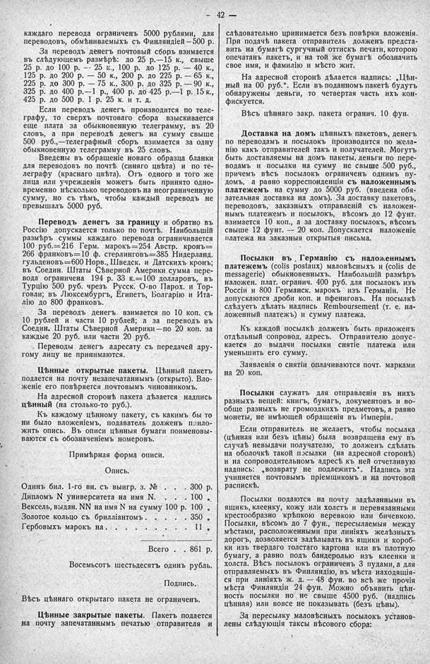

Лист источника 88
Скан

Распознанный текст
42
каждаго перевода ограниченъ 5000 рублями, для
переводовъ, обмѣниваемыхъ съ Финляндіей—500 р.
За переводъ денегъ почтовый сборъ взимается
въ слѣдующемъ размѣрѣ: до 25 р.—15 к., свыше
25 р. до 100 р. — 25 к., 100 р. до 125 р. — 40 к.,
125 р. до 200 р. — 50 к., 200 р. до 225 р. — 65 к.,
225 р. до 300 р. — 75 к., 300 р. до 325 р. — 90 к.,
325 р. до 400 р.—1 р., 400 р. до 425 р.—1 р. 15 к.,
425 р. до 500 р. 1 р. 25 к. и т. д.
Если переводъ денегъ производится по теле-
графу, то сверхъ почтоваго сбора взыскивается
еще плата за обыкновенную телеграмму, въ 20
словъ, а при переводѣ денегъ на сумму свыше
500 руб.,—телеграфный сборъ взимается за одну
обыкновенную телеграмму въ 25 словъ.
Введены въ обращеніе новаго образца бланки
для переводовъ по почтѣ (синяго цвѣта) и по те-
леграфу (краснаго цвѣта). Отъ одного и того же
лица или учрежденія можетъ быть принято одно-
временно нѣсколько переводовъ на неограниченную
сумму, но съ тѣмъ, чтобы каждый переводъ не
превышалъ 5000 руб.
Переводъ денегъ за границу и обратно въ
Россію допускается только по почтѣ. Наибольшій
размѣръ суммы каждаго перевода ограничивается
100 руб.=216 Герм. марокъ=254 Австр. кронъ=
266 франковъ=10 ф. стерлинговъ=385 Нидерланд.
гульденовъ=600 Норв., Шведск. и Датскихъ кронъ;
въ Соедин. Штаты Сѣверной Америки сумма пере-
вода ограничена 194 р. 33 к.=100 долларовъ, въ
Турцію 500 руб. чрезъ Русск. О-во Парох. и Тор-
говли; въ Люксембургъ, Египетъ, Болгарію и Ита-
лію до 800 франковъ.
За переводъ денегъ взимается по 10 коп. съ
10 рублей и части 10 рублей; а за переводъ въ
Соедин. Штаты Сѣверной Америки—по 20 коп. за
каждые 20 руб. или части 20 руб.
Переводы денегъ адресату съ передачей дру-
гому лицу не принимаются.
Цѣнные открытые пакеты. Цѣнный пакетъ
подается на почту незапечатаннымъ (открыто). Вло-
женіе его повѣряется почтовымъ чиновникомъ.
На адресной сторонѣ пакета дѣлается надпись
цѣнный (на столько-то руб.).
Къ каждому цѣнному пакету, съ какимъ бы то
ни было вложеніемъ, подаватель долженъ прило-
жить опись. Въ описи цѣнныя бумаги поименовы-
ваются съ обозначеніемъ номеровъ.
Примѣрная форма описи.
Опись.
Одинъ бил. 1-го вн. съ выигр. з. № . . . 300 р.
Дипломъ N университета на имя N. . . . 100 „
Вексель, выдан. NN на имя N на сумму 100 р. 100 „
Золотое кольцо съ брилліантомъ . . . . 350 „
Гербовыхъ марокъ на . . . . . . . . 11 „
Всего . . 861 р.
Восемьсотъ шестьдесятъ одинъ рубль.
Подпись.
Вѣсъ цѣннаго открытаго пакета не ограниченъ.
Цѣнные закрытые пакеты. Пакетъ подается
на почту запечатаннымъ печатью отправителя и
слѣдовательно принимается безъ повѣрки вложенія.
При подачѣ пакета отправитель долженъ предста-
вить на бумагѣ сургучный оттискъ печати, которою
опечатанъ пакетъ, и на той же бумагѣ обозначить
свое имя, и фамилію и мѣсто жит.
На адресной сторонѣ дѣлается надпись: „Цѣн-
ный на 00 руб.“. Если въ поданномъ пакетѣ будутъ
обнаружены деньги, то четвертая часть ихъ кон-
фискуется.
Вѣсъ цѣннаго закр. пакета огранич. 10 фун.
Доставка на домъ цѣнныхъ пакетовъ, денегъ
по переводамъ и посылокъ производится по жела-
нію какъ отправителей такъ и получателей. Могутъ
быть доставляемы на домъ пакеты, деньги по пере-
водамъ и посылки на сумму не свыше 500 руб.,
причемъ вѣсъ посылокъ ограниченъ однимъ пу-
домъ, а равно корреспонденціи съ наложеннымъ
платежемъ на сумму до 5000 руб. (введена обя-
зательная доставка на домъ). За доставку пакетовъ,
переводовъ, заказныхъ отправленій съ наложен-
нымъ платежемъ и посылокъ, вѣсомъ до 12 фунт.
взимается 10 коп., а за доставку посылокъ, вѣсомъ
свыше 12 фунт. — 20 коп. Допускается наложеніе
платежа на заказныя открытыя письма.
Посылки въ Германію съ наложеннымъ
платежемъ (colis postaux) маловѣсныхъ и (colis de
messagerie) обыкновенныхъ. Наибольшій размѣръ
наложен. плат. огранич. 400 руб. для посылокъ изъ
Россіи и 800 Германск. марокъ изъ Германіи. Не
допускаются дроби коп. и пфениговъ. На посылкѣ
слѣдуетъ дѣлать надпись Remboursement (т. е. на-
ложенный платежъ) и сумму платежа.
Къ каждой посылкѣ долженъ быть приложенъ
отдѣльный сопровод. адресъ. Отправителю допус-
кается до выдачи посылки снятіе платежа или
уменьшить его сумму.
Заявленія о снятіи оплачиваются почт. марками
на 20 коп.
Посылки служатъ для отправленія въ нихъ
разныхъ вещей: книгъ, бумагъ, документовъ и во-
обще разныхъ не громоздкихъ предметовъ, а равно
монеты, не имѣющей обращенія въ Имперіи.
Если отправитель не желаетъ, чтобы посылка
(цѣнная или безъ цѣны) была возвращена ему въ
случаѣ невыдачи получателю, то долженъ сдѣлать
на оболочкѣ такой посылки (на адресной сторонѣ)
и на сопроводительномъ адресѣ къ ней отчетливую
надпись: „возврату не подлежитъ“. Надпись эта
учиняется почтовымъ пріемщикомъ и на почтовой
распискѣ.
Посылки подаются на почту задѣланными въ
ящикъ, клеенку, кожу или холстъ и перевязанными
крестообразно крѣпкою веревкою или бичевкою.
Посылки, вѣсомъ до 7 фун., пересылаемыя между
мѣстами, расположенными при линіяхъ желѣзныхъ
дорогъ, дозволяется задѣлывать въ ящики и короб-
ки изъ твердаго толстаго картона или въ плотную
бумагу, а равно подъ бандеролью изъ клеенки и
холста. Вѣсъ посылокъ ограниченъ 3 пудами, а для
отправляемыхъ въ Финляндію, въ мѣста находящія-
ся при линіяхъ ж. д. — 48 фун. во всѣ же прочія
мѣста Финляндіи 24 фун. Можно объявить цѣн-
ность посылки но не свыше 4500 руб. (надпись
цѣнная) или вовсе не показывать (безъ цѣны).
За пересылку маловѣсныхъ посылокъ установ-
лены слѣдующія таксы вѣсового сбора: